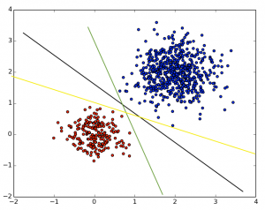

Linear seperator, Perceptron, SVM
Posted on Thu 13 February 2014 in Notes

A Linear seperator is an algorithm that seperates two dataset via a straight line.
- A Perceptron is a linear seperator that seperates at the first line it finds.
- An SVM (Support Vector Machine) seperates at the "best" line - e.g. with the largest distance to every point (the black line)
Source: